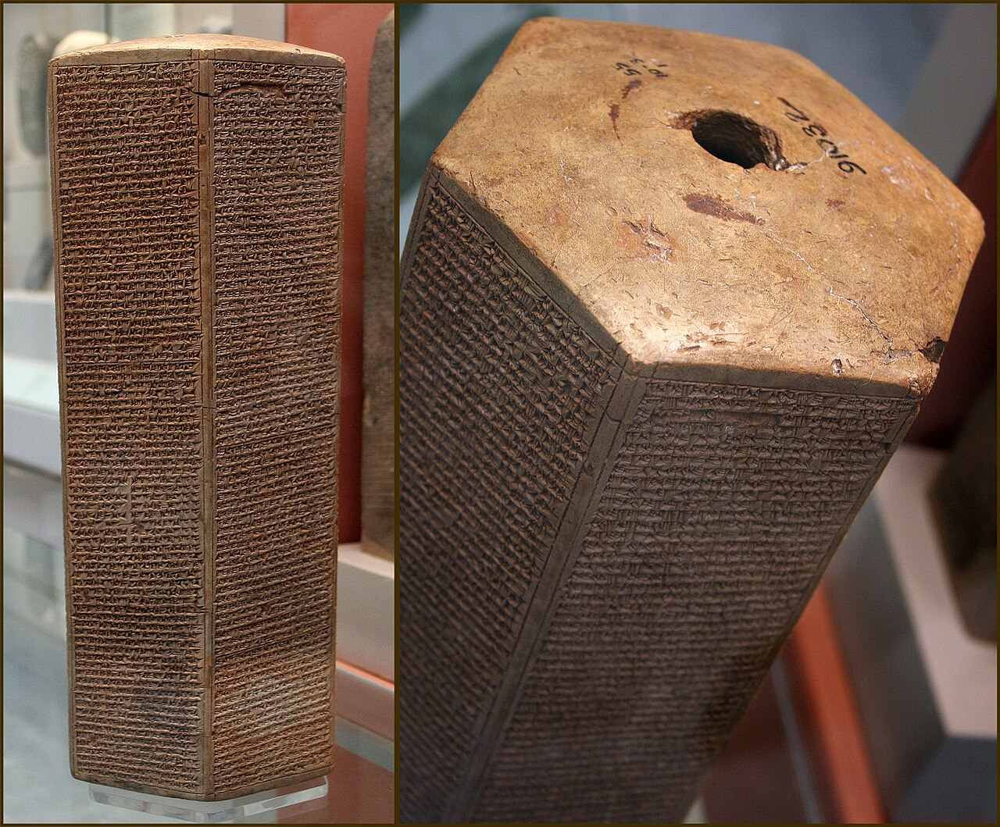

Sennacherib Prism (Taylor Prism)

- Find Name
- Sennacherib Prism (Taylor Prism)
- Historical Period
- Iron Age II
- Artifact Date
- c. 691 BC
- Date Discovered
- c. 1830s
- Discovery Location
- Nineveh, Iraq
- Current Location
- British Museum, London
- Timeline Era
- Divided Monarchy
- Description
- A six-sided clay prism inscribed with the annals of Assyrian king Sennacherib, including his campaign against Judah in 701 BC. Sennacherib boasts that he shut Hezekiah up in Jerusalem 'like a bird in a cage' and received heavy tribute.
- Biblical Significance
- Remarkably, for all his boasting, Sennacherib never claims to have captured Jerusalem, matching the Bible's account that the city was delivered. The prism confirms Hezekiah, the siege, and the tribute from Assyria's own records, while its silence about conquest leaves room for the miraculous deliverance Scripture celebrates.
- Evidence Class
- Direct
- Interpretations
- Scholars agree the prism is Sennacherib’s own account of the 701 BC campaign; it confirms the siege of Jerusalem while boasting of tribute — and notably never claims the city fell, matching 2 Kings 19.
- Scripture Illuminated
- Related People
- Related Books
- Related Places
- Related Events